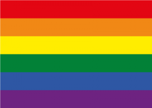
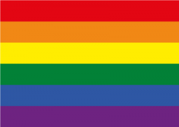

Pubg Mobile ist ein online shooter wo man gegen andere Spieler kämpft
mit dem Ziel das letze lebende Team oder der letze lebende Spieler zu sein. Es gibt viel verschiedene Modis
wie Classic, Arena, Arcade oder Metro Royal wobei letzteres kein Sinn macht zu spielen, da es der größte unnötigste Scheiß auf Erden ist.
In den verschiedenen Modis
gibt es wieder eine Auswahl von verschiedenen Karten die man spielen kann wie zum Beispiel Erangel oder Sanhok.
Ebenso kann man auswählen ob man mit Rang oder ohne Rang spielen möchte (was kein Sinn macht da eh niemand ohne Rang zockt, geschweige das es Spaß macht oder sonstiges).
Jedes andere Spiel ist besser als Pubg, also ist man auf der richtigen Seite wenn man kein Pubg spielt.
Abgesehen von Subway Surfers, dass ist das einzige Spiel was du nicht anstelle von Pubg spielen solltest (und schon garnicht mehrere Stunden).
Kurze Antwort: JA!!